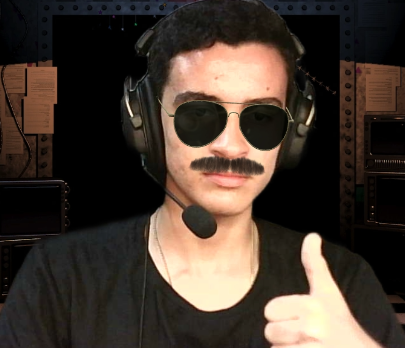
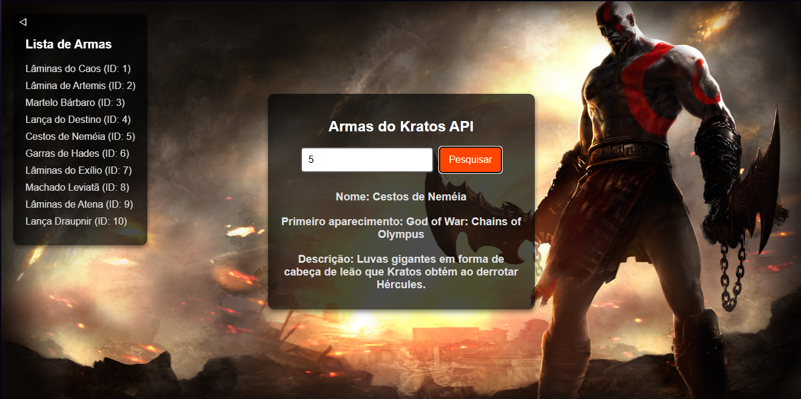
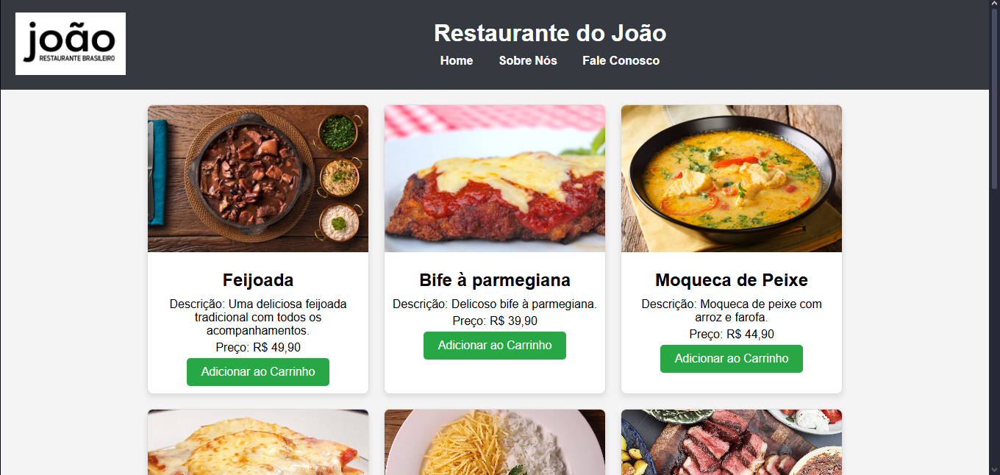
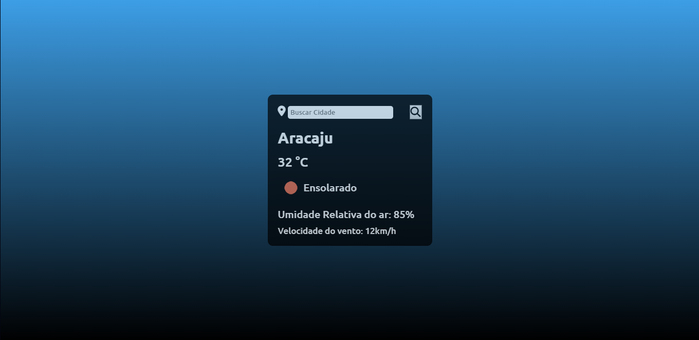
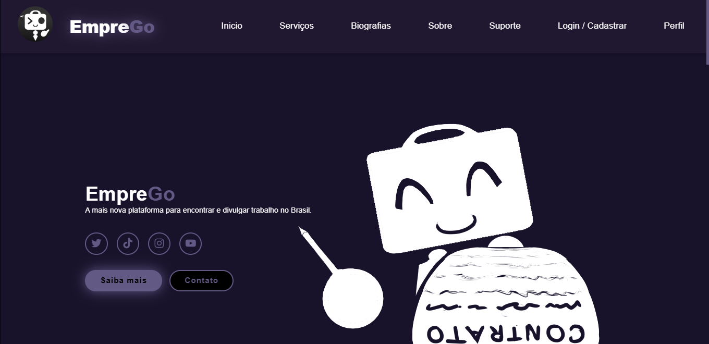

João Pedro Azevedo Freire Mecenas
Desenvolvedor Full-Stack | Estudante do SENAI
Sobre Mim

Meu nome é João Pedro, nasci dia 29 de Abril de 2008 em Aracaju - SE e atualmente estou fazendo Ensino Médio Integrado a Desenvolvimento de Sistemas no SENAI. Meu primeiro contanto com a programação foi em 2022, quando eu decidi fazer um curso gratuito de Python pelo YouTube. Comecei a gostar bastante de programação e decidi entrar no SENAI para aprimorar meus conhecimentos, desde então já aprendi diversas coisas como: criar APIs, bancos de dados e sites, além de linguagens como JavaScript, C#, C++, Python e Portugol. Depois de terminar o Ensino Médio no SENAI, quero cursar Ciências da Computação e futuramente trabalhar na área.
Projetos
- API God of War: Esse projeto não foi uma atividade proposta no curso, porém foi um projeto que eu desenvolvi sozinho em casa com os conhecimentos do curso. Nele é possível ver o nome, a descrição e primeira aparição das principais armas da série de jogos God of War.
- 
- Site de Cardápio: Essa foi uma atividade individual proposta no curso técnico, na qual nós tinhamos que fazer um cardápio online. Nele você pode adicionar e remover itens do carrinho e o site calcula automaticamente o valor, além de uma página com informações do restaurante e uma página para entrar em contato com o restaurante.
- 
- Link do projeto: Restaurante do João
- Site de Previsão do Tempo: Em outra de nossas aulas do curso nós tivemos que fazer um site que consumisse uma API com as condições climáticas de todas as cidades, estados e países do mundo. Nele é só você digitar o nome do lugar que desejar e clicar na lupa que eles irá mostrar a temperatura, a umidade do ar e a velocidadee o vento do lugar.
- 
- Link do projeto: App Previsão do Tempo
- Trabalho de Conclusão de Curso: Atualmente eu e meu grupo composto por mim e meus amigos: Alec Vinícius, Lucas, João Pedro Souza e Mateus Ricardo; estamos desenvolvendo o nosso TCC para entregar no final do ano. Atualmente o nosso site ainda não está pronto, porém estamos sempre adicionando mais coisas ao site.
- 
- Link do projeto: EmpreGo
Contato

- Whatsapp: 79 9 9146-0078

- Email: jp2904.lindo@gmail.com

- Instagram: @joaofreire29

- GitHub: jaobrabo123